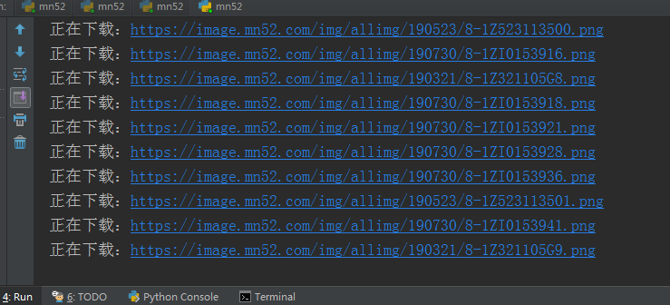

其实解决办法很简单，加入header，然后把Referer写入即可！
headers = {
'User-Agent': 'Mozilla/5.0 (Windows NT 6.1; WOW64) AppleWebKit/537.36 (KHTML, like Gecko) Chrome/65.0.3325.181 Safari/537.36',
'Referer': url
}本文爬取https://www.mn52.com/网站上面的清纯美女图片，代码如下；
# 需要的库
import requests
import re
import os
from multiprocessing import Pool
# 主函数
def get_img(url):
# 设置图片存储路径
path = './mn52/'
if not os.path.exists(path):
os.mkdir(path)
# 请求头，因为图片路由有防盗链设置所以在headers中添加'Referer': url
headers = {
'User-Agent': 'Mozilla/5.0 (Windows NT 6.1; WOW64) AppleWebKit/537.36 (KHTML, like Gecko) Chrome/65.0.3325.181 Safari/537.36',
'Referer': url
}
try:
# 请求主页面路由
response = requests.get(url=url,headers=headers)
# print(response.text)
# 正则提取并遍历获取分页面
res_paging = re.findall('<div class="picbox">.*?<a href="(.*?)"',response.text,re.S)
for i in res_paging:
# 拼接分页面路由
url_infos = 'https://www.mn52.com' + i
# 请求分页面路由
res_details = requests.get(url=url_infos,headers=headers)
# 遍历获取图片路由
res_detail = re.findall('<div class="img-wrap">.*?<img .*?rel="(.*?)"/>',res_details.text,re.S)
for i in res_detail:
# 拼接图片路由
img_urls = 'https:'+i
# 给图片命名
filename = i.split('/')[-1]
# 判断图片是否已下载
if os.path.exists(path+str(filename)):
print('图片已存在')
else:
# 请求图片连接
res = requests.get(url=img_urls,headers=headers)
# 保存图片
with open(path+str(filename),'wb') as f:
f.write(res.content)
# 打印下载信息
print('正在下载：'+img_urls)
except Exception as e:
print(e)
# 程序入口
if __name__ == '__main__':
# 构造完整路由
urls = ['https://www.mn52.com/meihuoxiezhen/list_2_{}.html'.format(i) for i in range(1,94)]
# 开启多进程
pool = Pool()
# 启动程序
pool.map(get_img,urls)
print('抓取完成')图片比较多，需要一些时间下载，控制台显示的下载过程

打开文件查看图片是否下载成功
done